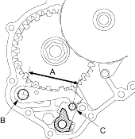
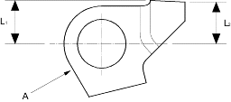

- Set the park lever in the
 position.
position.
- Measure the distance (A) between the park pawl shaft (B) and the park lever roller pin (C).
STANDARD:
72.9-73.9 mm (2.87-2.91 in.)

- If the measurement is out of tolerance, select and install the appropriate park lever stop (A) from the table below.

PARK LEVER STOP
| Mark | Part Number | L1 | L2 |
| 1 | 24537-PA9-003 | 11.00 mm
(0.433 in.) |
11.00 mm
(0.433 in.) |
| 2 | 24538-PA9-003 | 10.80 mm
(0.425 in.) |
10.65 mm
(0.419 in.) |
| 3 | 24539-PA9-003 | 10.60 mm
(0.417 in.) |
10.30 mm
(0.406 in.) |
- After replacing the park lever stop, make sure the distance is within tolerance.